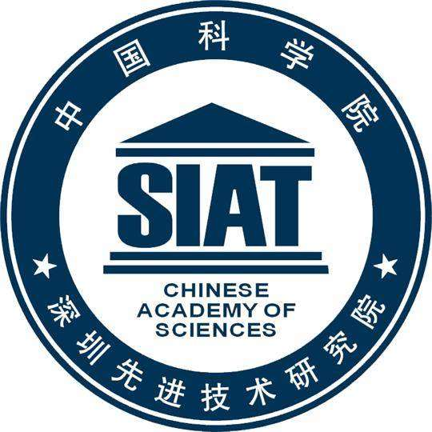
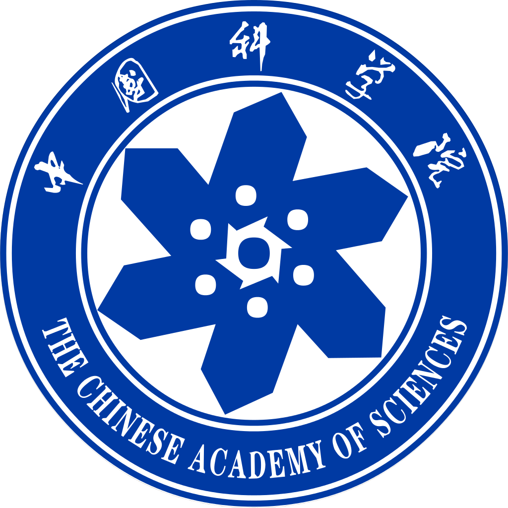
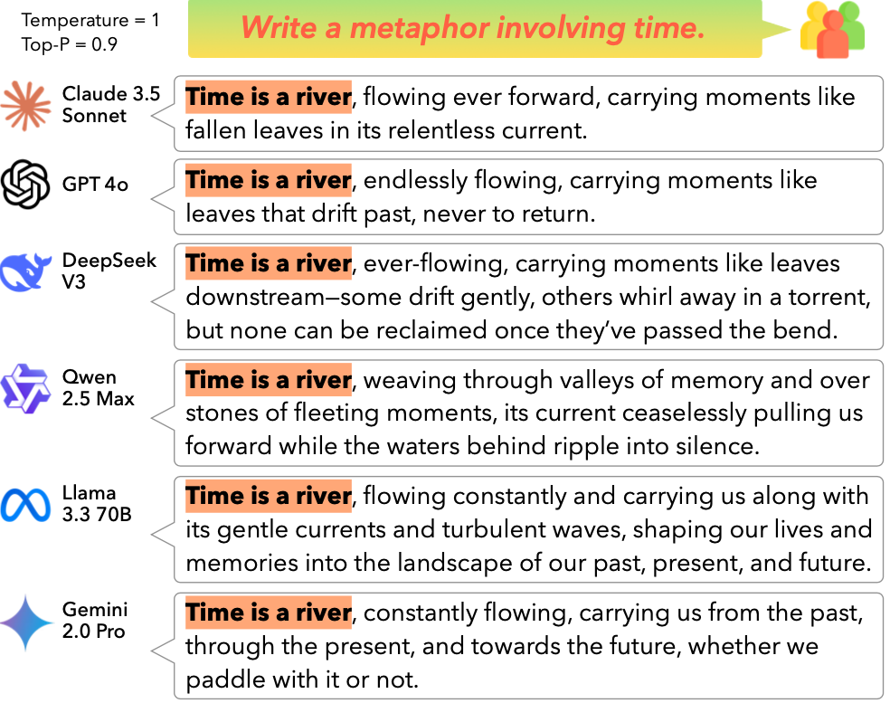
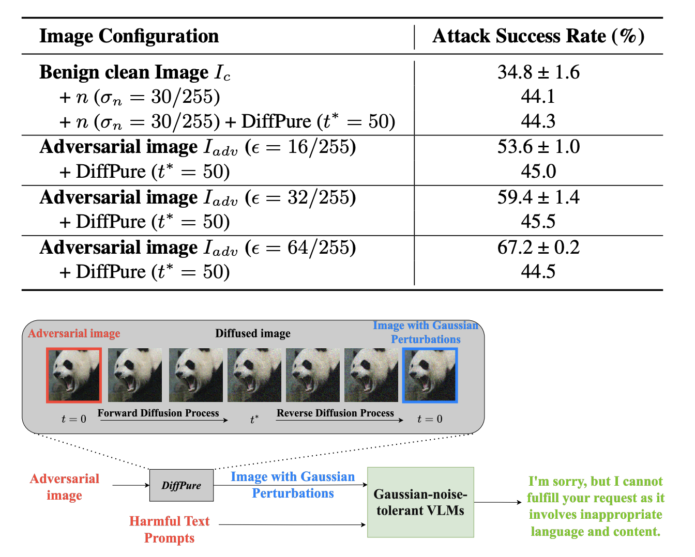
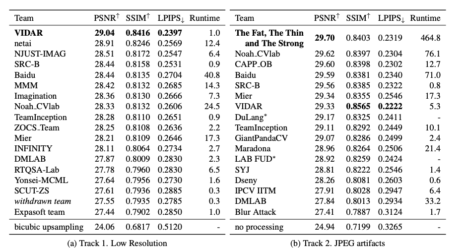
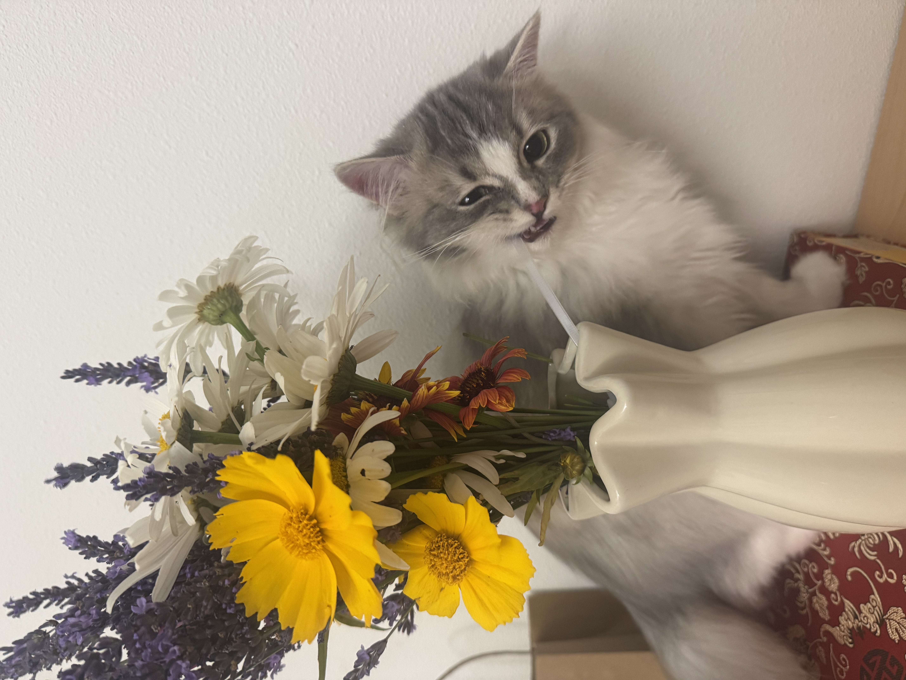
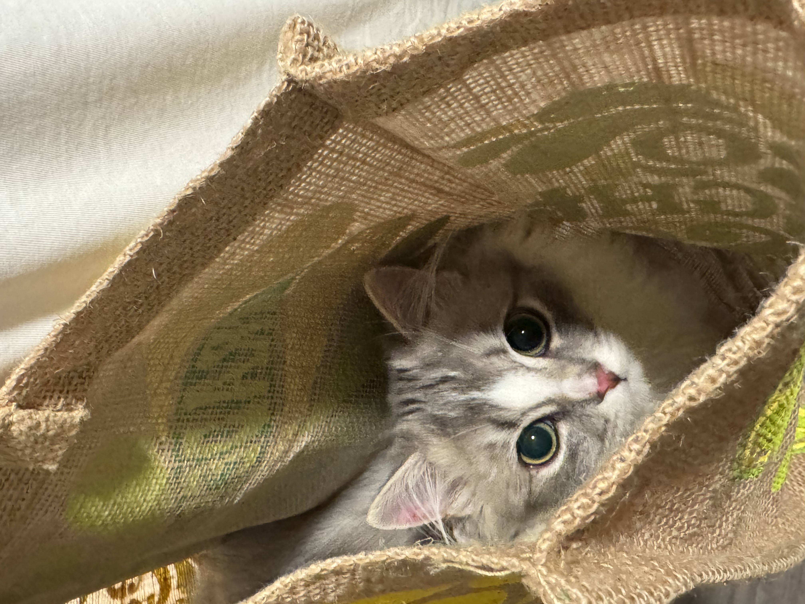

Hi! This is Yuanjun Chai 柴源君 (sounds like Y-wen Joon, Ch-eye), aka Allen. I just received my M.S. in Electrical and Computer Engineering (MSECE) from the University of Washington, Seattle in August 2026 (Go Huskies!).
I received my bachelor’s degree in Electrical and Computer Engineering from Xidian University with highest honors. My undergraduate thesis on image inpainting was guided by Chao Dong at SIAT-CAS

. I was also fortunate to continue working with him and Yu Qiao (CAS
) on image and video super-resolution, and with Yue Gao (Tsinghua University ) on event cameras.Previously, I worked as a machine learning engineer for 5 years at IT companies, such as VMware AI Lab , focusing on LLM, agent, and RAG. Before this, I worked at YeahMobi—an affiliate of Alibaba Group —as a machine learning engineer. I was responsible for all technical development of the AIGC platform Kreado AI , including video creation, virtual avatar, and more.
Research Interests:
- LLM: LM agent, RLVR, LM Pluralistic Alignment, MoE
- Multi-modality: world model, Vision-Language Model (VLM)
Beyond research, I also want to turn new technologies into products that make people’s lives better. Thus, I co-founded a start-up, INGREM Inc., which builds a precise eye-control platform that helps people with high-level paraplegia use computers.
I am currently seeking full-time roles in AI research and engineering (Industry/Academia), available immediately. Feel free to reach out!
🔥 News
- 2026.08: Just received my MSECE from UW Seattle. Open to new opportunities!
- 2026.06: Just wrapped up my internship with the TikTok TnS team!
- 2026.01: 🥰🥰 Excited to start my internship with the TikTok Trust & Safety (TnS) team!
- 2025.11: 🔥🔥🔥 Our paper Artificial Hivemind about Language Model Homogeneity, received the NeurIPS Best Paper Award! See you in San Diego!
- 2025.10: 🎉🎉 Received UW Graduate Student Conference Presentation Award and UW ECE Student Professional Development Award, to support attending ICCV in Hawaii.
- 2025.09: 🔥🔥 Our paper Artificial Hivemind on the homogeneity of large language models was accepted as an Oral at NeurIPS 2025 (Datasets & Benchmarks Track)! See you in San Diego!
- 2025.06: 🔥🔥 Our paper DiffPure-VLM about Vision-Language Model Safeguarding, has been accepted to ICCV 2025! See you in Hawaii! 🏖️
- 2024.09: 🥰🥰 Started my M.S. at the University of Washington! So excited to begin a new research journey at UW!
- 2022.07: 🎉🎉 Thrilled to join VMware AI Lab as an MLE! We built a private RAG-based LLM platform on top of h2oGPT (⭐️8k+), in collaboration with H2O.ai.
- 2021.03: 👏👏 Rank 10 / 60 in NTIRE 2021 Challenge on Image Deblurring in CVPR 2021 and our method Visual Token Transformer for Image Restoration was selected for presentation in the summary paper.
- 2021.01: 🥰🥰 Our eye-control platform has helped more than 300 people with paraplegia!
- 2020.08: 🎉🎉 At the request of the IKC authors, I reproduced the code of IKC (CVPR 2019, blind super-resolution) and open-sourced it, which has received ⭐️200+.
📝 Research

Artificial Hivemind: The Open-Ended Homogeneity of Language Models (and Beyond)
Liwei Jiang, Yuanjun Chai, Margaret Li, Mickel Liu, Raymond Fok, Maarten Sap, Yulia Tsvetkov, Nouha Dziri, Alon Albalak, Yejin Choi
NeurIPS 2025 Best Paper Award
- Uncovered and analyzed the “Artificial Hivemind” effect, demonstrating significant intra-model repetition and inter-model homogeneity in current language models. Introduced $\infty$-Chats, the first large-scale (26K queries) dataset of real-world open-ended user queries, and developed a comprehensive taxonomy (6 categories, 17 subcategories) for LLM prompts.

Jiawei Wang*, Yushen Zuo*, Yuanjun Chai, Zhendong Liu, Yicheng Fu, Yichun Feng, Kin-Man Lam
ICCV 2025
Project | 
- Our Robust-VLGuard dataset and DiffPure-VLM defense framework tackle the vulnerability of visual language models (VLMs) to adversarial perturbation attacks. By combining Gaussian noise enhancement and diffusion model-based adversarial noise conversion, we demonstrably improve VLM robustness, even against strong attacks.

NTIRE 2021 Challenge on Image Deblurring
Seungjun Nah, Sanghyun Son, Suyoung Lee, Radu Timofte, Kyoung Mu Lee, Yushen Zuo, Yuanjun Chai et al.
CVPR 2021 Workshops (NTIRE)
- We propose a new method, Visual Token Transformer for Image Restoration, for image deblurring in the NTIRE 2021 Challenge on Image Deblurring, which achieves a top-10 place on the leaderboard.
🖥️ Industrial Experience
🧑🎨 AIGC (Generative Model)
Kreado AI: AIGC Platform for Marketing Content Generation
Yuanjun Chai, YeahMobi
- We built Kreado AI, a global AIGC platform for marketing content generation that integrates a wide range of generative capabilities:
- Virtual avatars (talking-face generation, speech synthesis, LLM)
- AI models (text-to-image, LoRA, ControlNet)
- Custom cloning services (image-to-video, voice cloning)
- I focused on improving the virtual-avatar and AI-model algorithms, and worked with system architects to improve the overall architecture. Kreado AI serves users across Europe, Africa, Southeast Asia, and the Americas, with quarterly revenue exceeding US$1 million.
🧙♂️ RAG-based LLM
Private RAG-based LLM Platform on VMware (built on h2oGPT)
Yuanjun Chai, VMware AI Lab, in collaboration with H2O.ai
Project |


- Built on h2oGPT, we developed a RAG-based LLM platform for cloud-native and private AI. It supports diverse LLMs and data sources such as PDFs, codebases, datasets, and web links. I was responsible for all RAG algorithm development and production deployment. Features include:
- Text QA and chat with RAG
- Multi-modal QA and chat
- AI agents
- Multi-modal LLMs for cloud-native AI
👨⚕️ AI healthcare & Charity

Face Control: Precise Facial-Control Platform for People with Paraplegia
Yuanjun Chai, Ingrem.inc
- I co-founded a start-up, Ingrem, together with a few other hardcore engineers. Our goal was to build a complete smart bed that supports both daily living and entertainment for people with high-level paraplegia. Within the team, I led the software development — an eye- and facial-control platform. Powered by computer vision algorithms, it lets users drive the mouse and keyboard precisely through subtle facial movements of the eyebrows, eyes, and mouth. Together, the platform and the bed make everyday computer use and social connection far more accessible. We truly believe technology makes people’s lives better — and we are making it happen!
🎖 Honors and Awards
- NeurIPS 2025 Best Paper Award
- UW ECE Student Professional Development Award
- UW Graduate Student Conference Presentation Award
- Outstanding Undergraduate Thesis Award (top 10 of 5,000), Topic: Image Inpainting Based on Deep Learning
- Gold Medal, National Computer Design Contest (Birdsong Recognition with Machine Learning)
🧑⚖️ Academic Service
Conference Reviewer:
- NeurIPS 2026, NeurIPS ED 2026
- ACL ARR May 2026 (EMNLP 2026)
- CVPR 2026, ECCV 2026
Journal Reviewer:
- IEEE Transactions on Neural Networks and Learning Systems (TNNLS)
- IEEE Transactions on Multimedia (TMM)
- Pattern Recognition
🤝 Mentorship
Mentors
Mentees
🎓 Education
- 2024.09 - 2026.08, Master of Science in Electrical and Computer Engineering (MSECE), University of Washington, Seattle
- 2015.08 - 2019.06, Bachelor’s degree in Electrical and Computer Engineering, Xidian University
- 2018.08 - 2018.09, Summer Exchange Program, University of Cambridge (with Prof. Pietro Liò). Rank 1/53, fully-funded Cambridge Trust Scholarship
🧑💻 Professional Experience
- 2026.06 - now, Researcher, University of Washington (advisor: Prof. Jenq-Neng Hwang)
- 2026.01 - 2026.06, Machine Learning Engineer Intern, TikTok Trust & Safety
- 2024.10 - 2026.01, Research Assistant, UW Paul G. Allen School of Computer Science & Engineering
- 2022.07 - 2024.09, Senior Machine Learning Engineer, VMware AI Lab
- 2020.07 - 2022.07, Senior Machine Learning Engineer, YeahMobi (Alibaba Group affiliate)
- 2019.05 - 2020.07, Research Assistant at CAS, Tsinghua University
🏃♂️ Hobbies
My hobbies include Fencing🤺, Basketball🏀, Swimming🏊, Guitar🎸 and Motorcycle🏍️. In high school, I won my first gold medal in Fencing🤺 at a national-level fencing competition in Shaanxi Province🏅.
I also have a lovely cat🐱 – Luna:

